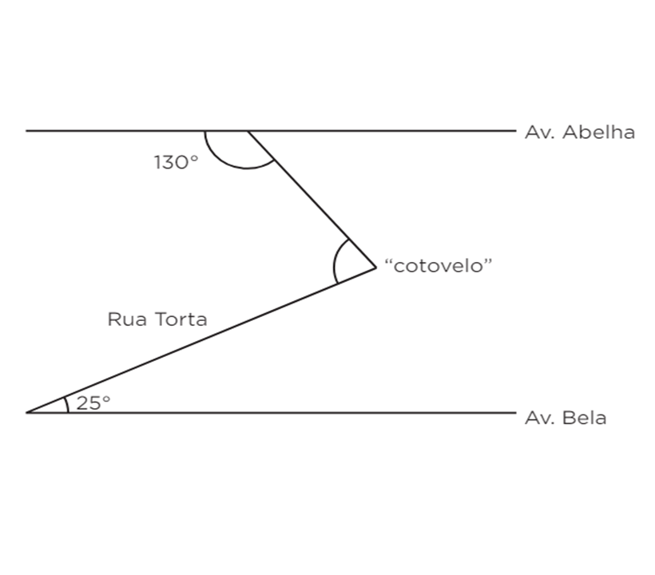
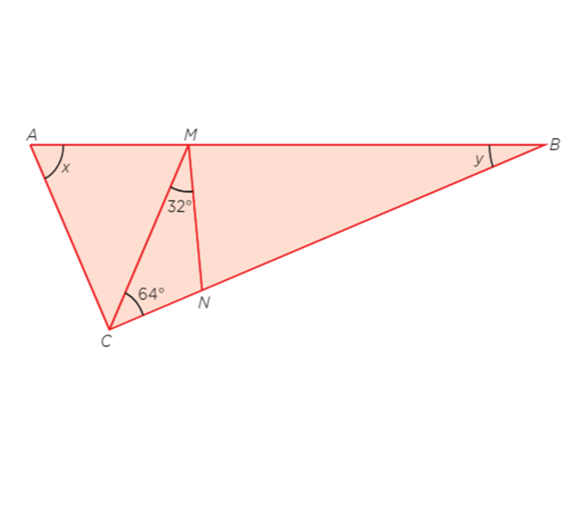
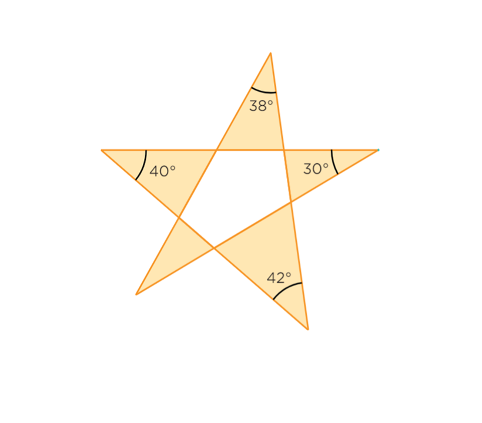
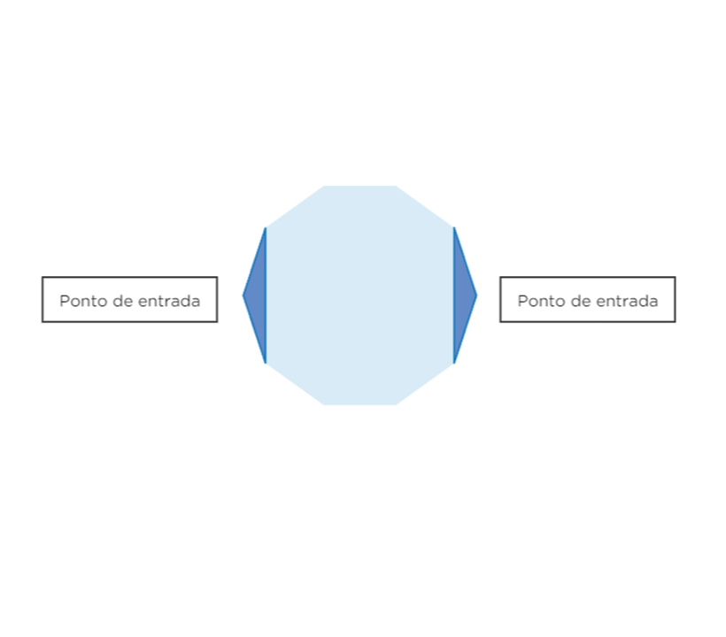
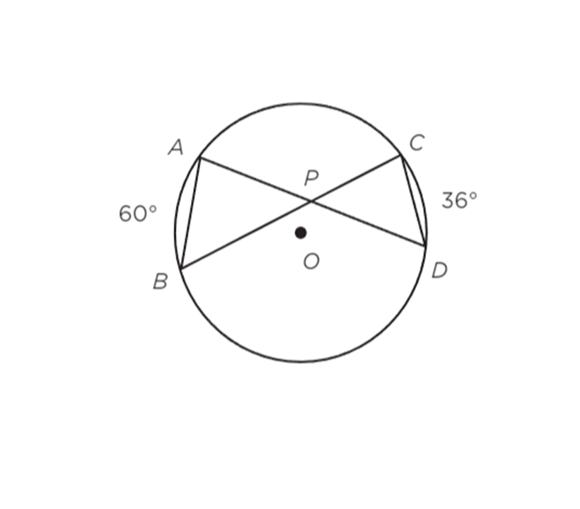
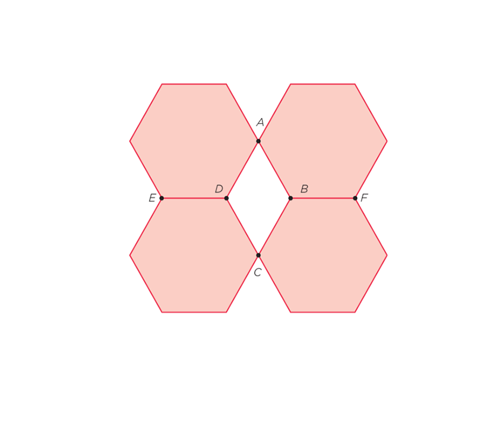
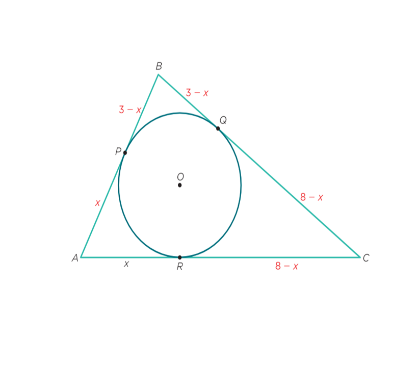
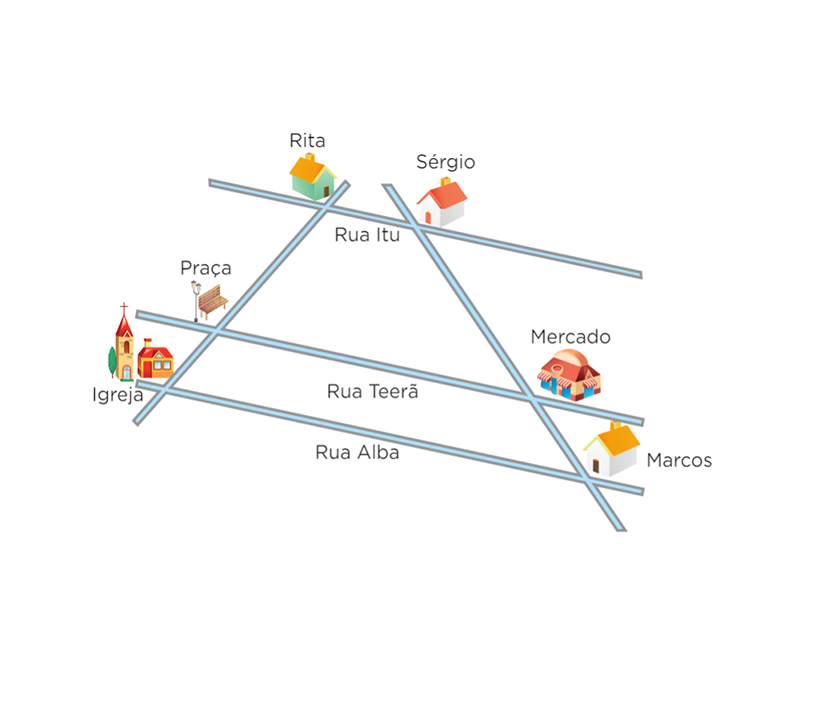
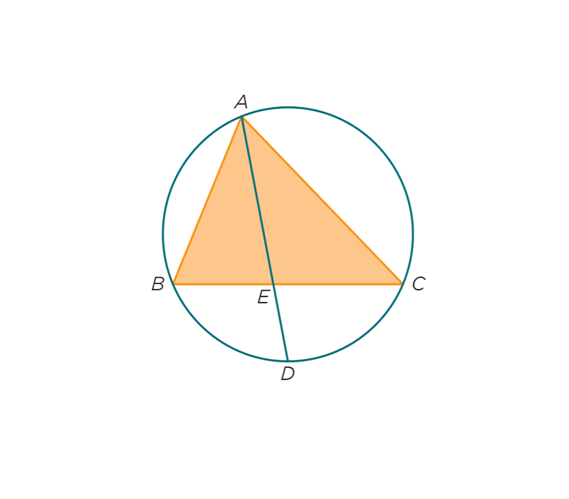

Exercicios:
Angulos Geometricos
1:Ao consultar o mapa de sua cidade, Júlia percebeu que as avenidas Abelha e Bela são paralelas e têm uma ligação pela rua Torta. Essa rua forma um “cotovelo”, como mos- tra a figura a seguir.
 A medida do ângulo formado pelo “cotovelo” é:Angulos no triangulo
2:Verônica tem um terreno com o formato triangular e demarcou nele uma região também triangular para fazer um jardim. A figura a seguir mostra o terreno (triângulo ABC) e a região do jardim (triângulo CMN), com os ângulos internos do jardim.
 Sabendo que CM = CA, x 2 y vale:3:Diego desenhou uma estrela de 5 pontas na areia da praia e mediu os ângulos de quatro dessas pontas, esquecendo de medir o da quinta.
 No dia seguinte ele voltou para medir o ângulo da quinta ponta, contudo a maré alta “apagou” seu desenho. Usando os seus conhecimentos de Geometria, ele foi capaz de concluir que essa medida era:Polignos convexos
4:O piso de uma sala com o formato de um decágono regular será revestido com dois tipos de granito, um claro e outro es- curo, como está representado na figura a seguir.
 As regiões escuras estão localizadas nos pontos de entrada do salão. Os triângulos que representam as peças de granito escuro serão feitas sem emendas, isto é, cada peça é única. Por isso, deve ser cortada com precisão. As medidas, em graus, dos ângulos internos do triângulo que representam cada uma dessas peças devem ser:1: 120°, 30°, 30°
2: 108°, 36°, 36°
3: 144°, 18°, 18°
4: 150°, 15°, 15°
5: 140°, 20°, 20°
Angulos em uma circunferencia
5:Para criar o logotipo de sua marca de roupas, João teve a ideia de fazer uma gravata borboleta estilizada como mostra a figura a seguir.
 A medida do ângulo BPD , em graus, é:Simetrias e congruencias
6:(UFRGS-RS) Os quatro hexágonos da imagem a seguir são regulares e cada um tem área de 48 cm2.Os vértices do quadrilátero ABCD coincidem com vértices dos hexágonos. Os pontos E, D, B e F são colineares.
 A área do quadrilátero ABCD, em cm2 é:7:Obtenha o valor de x indicado na figura, dado que
 a circunferência de centro O é inscrita ao triângulo ABC, com AB = 3, BC = 6 e AC = 8, sendo P, Q e R os pontos de tangência:1: 0
2: 2
3: 2,5
4: 3,5
5: 5
Segmentos proporcionais
8:O esquema a seguir representa um trecho do mapa da cidade onde Rita mora. Ela, Sérgio e Marcos estudam na mesma classe e quando aprenderam o teorema de Tales, resolveram aplicá-lo no mapa.
 Rita informou aos amigos que a distância da praça até a igreja de São Pedro é 4 km. Sérgio acrescentou que a distância entre sua casa e a de Marcos é 15 km e até o supermercado, 9 km. Além disso, eles sabem que as ruas Itu, Teerã e Alba são paralelas. Com essas informações, eles calcularam algumas distâncias utilizando o teorema estudado e chegaram a diversas conclusões. Uma dessas conclusões poderia ser a de que a distância:1: da casa de Rita até a igreja de São Pedro é maior que 9 km
2: da casa de Rita à praça é maior que a da casa de Marcos até ao supermercado
3: da casa de Sérgio à casa de Marcos é menor que da casa de Rita até a igreja
4: da casa de Marcos até o supermercado é menor que 5 km
9:Na figura a seguir, o triângulo ABC está inscrito na circunferência. A corda AD intersecta o lado BC no ponto E. Se D é ponto médio do arco BC, AB = 6 cm, AC = 9 cm e BC = 10 cm, então o segmento BE mede:

Gabarito
1: 75°
2: 64°
3: 28°
4: 144°, 18°, 18°
5: 132°
6: 16
7: 2,5
8: da casa de Rita até a igreja de São Pedro é maior que 9 km
9: 4 cm
Tabela de Acertos
Gabarito no Final da Página
Deixe seu feedback